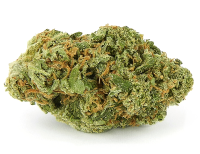
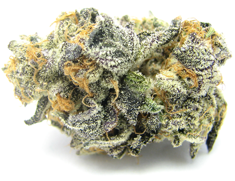
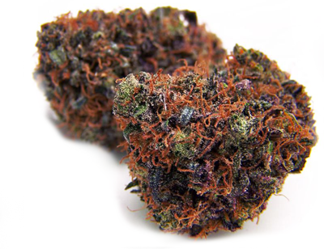
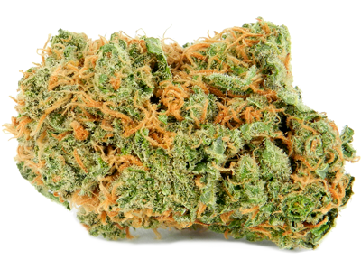
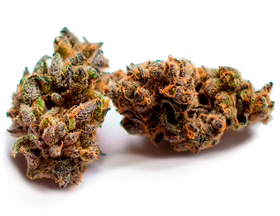
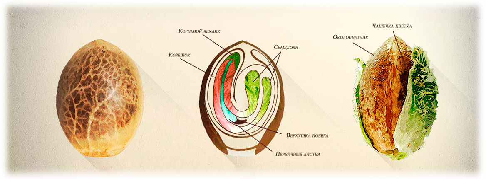
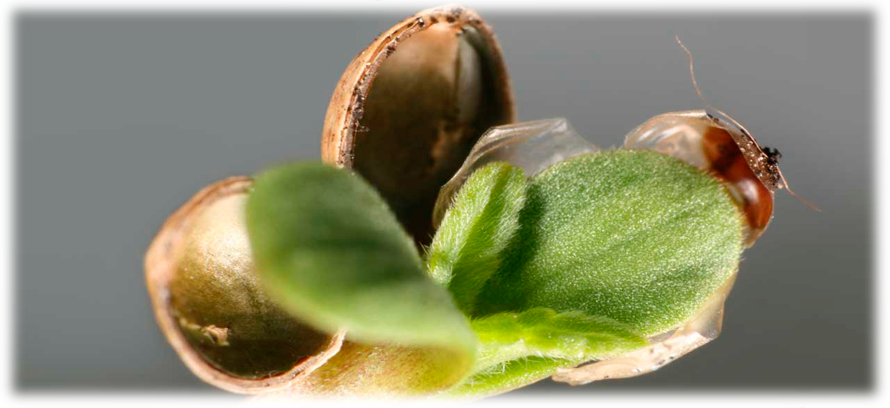
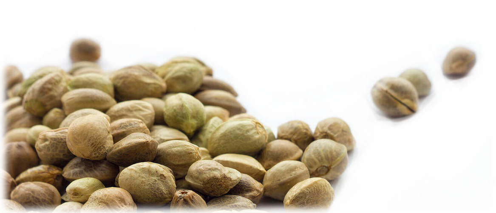

Выбор правильных семян — это залог успеха любого гровера. От генетики зависит не только конечный уровень ТГК, но и высота растения, срок его созревания и устойчивость к вредителям. Мы поможем вам разобраться в основных типах семян, чтобы вы могли выбрать оптимальный вариант для ваших условий.
Типы семян по гендеру и циклу
Регулярные semena
Из этих зерен могут вырасти как мужские, так и женские растения. Требуют внимательного отбора: мужские кусты необходимо удалять, чтобы они не опылили женские, иначе уровень ТГК в шишках значительно упадет.

Феминизированные semena
Результат селекции: из таких семян вырастают исключительно женские растения. Это гарантирует высокий урожай смолистых соцветий без риска появления «мужчин» в боксе.
Автоцветущие semena

Растения с «автоцветом» начинают цвести автоматически по истечении вегетативного периода, независимо от светового режима. Они быстрее созревают, ниже ростом и менее прихотливы.
Генетика: Сатива, Индика и Рудералис
Индичные semena

Невысокие растения с коротким циклом цветения. Обладают седативным эффектом, устойчивы к стрессам и идеально подходят для индора.
Семена Сативы
Высокие, плодоносные растения с длительным периодом цветения. Обладают бодрящим эффектом. Лучше всего чувствуют себя в теплом климате аутдора.

Рудералис
Дикий вид конопли, который не используется в чистом виде из-за низкого ТГК, но является основой для всех современных автоцветущих гибридов.
Показатели уровня ТГК

При выборе семян обращайте внимание на прогнозируемый уровень ТГК:
- 0% - 5% ТГК: Техническая конопля (Рудералис). Не обладает психоактивным эффектом.
- 8% - 16% ТГК: Стандартные селекционные сорта. Оптимальны для большинства пользователей.
- 16% - 25%+ ТГК: Мощные элитные сорта для опытных гроверов.
На что обратить внимание при покупке?
Период цветения

Если ваше лето короткое, выбирайте автоцветы. Для тропиков подойдут любые сорта, включая медленную Сативу.
Уровень запаха
Для закрытых помещений ищите сорта с «низким уровнем запаха», чтобы не привлекать лишнего внимания соседей.

Габариты растения
Подбирайте высоту сорта под размер вашего гроубокса. Индика компактнее и лучше вписывается в малые пространства.
Важное предупреждение!

Согласно законодательству Украины, покупка и выращивание конопли запрещены. Данная информация предоставлена исключительно в научно-образовательных целях для ознакомления с мировым опытом селекции.
🌿 Хотите выбрать лучшие semena?
Ознакомьтесь с нашим списком победителей Cannabis Cup, чтобы выбрать самый мощный сорт.
Посмотреть топ сортов